会津村/福島県河東町
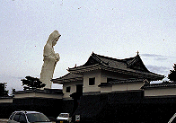 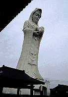
日本にある大観音のほとんどに共通している現象がある。
それは客が少ないということである。一般の観光客が大観音を避ける理由は幾つか考えられる。
理由その1.やっぱり宗教臭くて妖しい
理由その2.地元の人にとっても美観を損ねるものである場合が多く、何となく邪魔者扱い
理由その3.つまらない
1.と2.に関しては、これを改善する事は大観音を建てる事自体を否定してしまう事になりかねない。
そうなると私の楽しみである「チンケな観光スポット巡り」の訪問先が減る事になってしまい、非常に寂しくなってしまうので、改善策なし、と言う事にしておこう。
しかし3.に関しては私も多いに思うところがあり、幾らか改善の余地があるのではないか、と思われれる。
で、その可能性を僅かに示していると思われれる大観音施設が会津にあるので紹介しよう。
会津若松の玄関口、河東町の国道沿いにある会津村である。
ここは大観音像を備えながらも只の寺ではなく遊技施設や大庭園や資料館などを兼ね備えた純観光施設なのだ。
ここのメインは無論、会津慈母大観音像という57メートルの子連れ大観音なのだが、
観光施設だから入り口にはデーンと石垣の塀が続いており正面には大手門がそびえ建っている。
お寺じゃないんだから山門なんかなくてもＯＫ！という姿勢をいきなりアピールしている。
そういえば石垣の向こうには3メートル位の会津若松城のミニチュアなんかも見えたりしていて、「脱☆寺院」ってな感じがプンプンしてくる。
入り口で貰ったパンフレットを見ると「会津慈母大観音像と6万坪の大庭園」とのキャッチコピー。
そして園内の案内版を見ると大観音の他に移築してきた会津地方の民家が何件かあり、園内はさながらリトル日光江戸村かあ〜ってな雰囲気を漂わせている。
その他、忍者屋敷（ミニ会津若松城の正体はコレでした〜）やゴーカート、ＳＬ列車なんてのもあり、子供もＯＫ！状態にはなっている。
で、件の観音像に向う。観音像の周りには観光施設とはいいながら一応他の施設との差別化のために壁を設けてある。そして壁の中には禅堂やお守り、おみくじ等を販売する寺務所があり、一応寺としてのアイテムも常備している。
大観音さんは子供を抱っこしておりその子を見下ろすかのような姿勢なので、真下近くまで行かないと表情が読みにくいのだが........
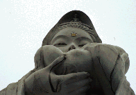
目が恐い。とても慈母という冠がついているとは思えない。どちらかというと「いっそ、この子と.......」といった感じで、他人事ながら、待て！早まるな！などと思ってしまい勝ちな観音像である。
で、内部。基段部には大観音フリークにはおなじみの三十三観音像が....と思ったらそれぞれの観音様の名前が書いてあるだけの掛け軸が壁に掛けてあるだけ。これって手抜きじゃあないのか？
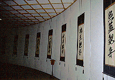 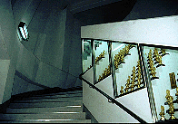 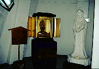 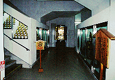
で、螺旋階段を登り頂上を目指す。螺旋階段の内側の棚には金ぴかのミニ観音像が奉納されている。観音さまがそのうち不動さまになり、阿弥陀さまが並んでいるあたりになると、そこは頂上。観音像の胸の辺りに当たる。そこには観音像のミニチュアが飾られている位で、盛り上がりには欠けるんだけど。この辺も大観音がつまらないと云われる一因であろう。
大観音像を出て庭園に行く。高低差を利用した庭園は中々のモノだ。途中つくば万博に出展したというＦＲＰの涅槃像などがあり寂しくなる。
池では物凄く腹を空かした鯉が手ぐすねひいている。それと同様に園内各所のお土産屋のおばちゃんも数少ない客のお越しを待っている。
やっぱり園内は閑散としているのだ。うむ〜。客寄せ企業努力をしたのにあまり酬われていないようですな。
やっぱ、大観音と集客能力というのは相反するものなんでしょうなあ〜。
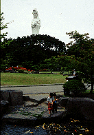 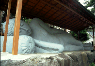 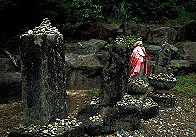 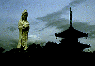
1999.6
珍寺大道場 HOME